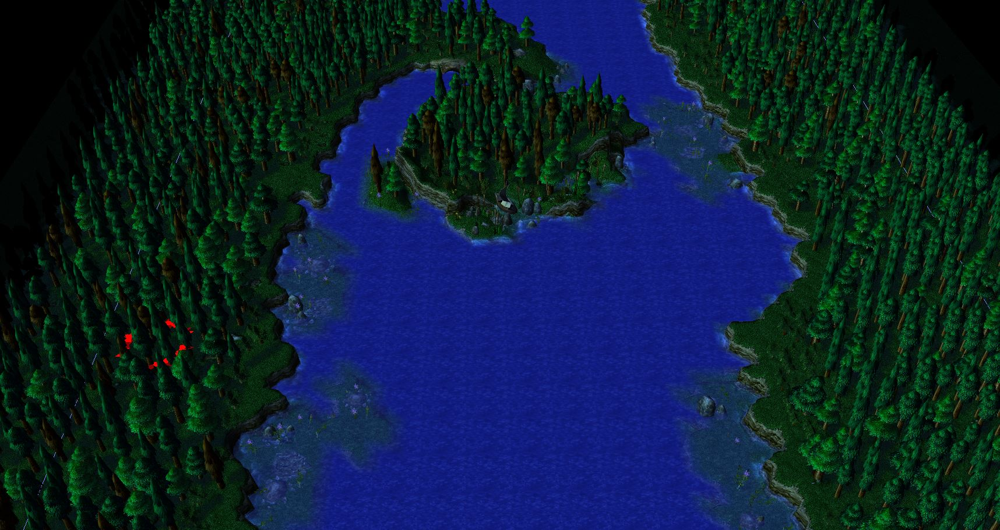

Quey River

Quest Island
This 'island' (which technically isn't an island, but rather a peninsula) was named quest island long ago when a man named Bhomian Dessa set out on a quest to settle a new town with his family. He traveled down Quey river heading north where he eventually founded Dessaquest. This island is home to a small settlement of wild Murlocs (character sheets). These murlocs tend to wonder about at night and tend to stay hidden throughout the daylight hours. They have a small village in the center of the island where they have their huts.